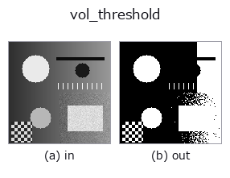
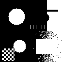

3d op• Data kinds: volume → volume
• Call: fullseye.apply(img, "vol_threshold", a=0.5, b=0.5) (the 2-D model is one image plus two scalar knobs a,b∈[0,1])

*The figure is the actual output on a synthetic 128×128 input. Left: input, right: output. Point clouds are drawn as a top-down scatter (brightness = z), 1-D series as a line plot, volumes as the maximum-intensity projection along z, videos as the middle frame, complex images as magnitude; return values that are not pictures are shown as the values themselves.*
Sweeping knob a (0.1 / 0.5 / 0.9, the other knob at its default):
▸ vol_threshold: knob a sweep (docs site)
*Knob b does not change the output (measured: identical at 0.1 / 0.5 / 0.9).*
Stages (the ops that come before → this op, left to right):
▸ vol_threshold: stages (docs site)
On other images (synthetic scene / photo / coins. Top row: inputs, bottom row: their outputs. Knobs at default):
▸ vol_threshold: other inputs (docs site)
Motion (GIF: frames / views / slices in turn. The still figure is the complete one; the GIF is supplementary):

Global thresholding of a 3D volume (the 3D counterpart of the 2-D `_threshold`). No corresponding HALCON op is specified.
> The detailed description below is the original text — the summary and the headings are translated.
`a がしきい値そのもの（0〜1）で、v > a を満たすボクセルを 1 にする。b` は未使用。出力は二値ボリューム（0/1 の float64）。
• gallery2d_physics_alife_3d family guide
• Sample-data catalog (download URLs / licences) — 2-D uses skimage.data (BSD/public domain) plus synthetic images; 3-D lists download URLs for real data sources (Stanford, PDS, …).
• Operator provenance and references — the sources of the research/methods this op family came from.
• The canonical algorithm (author, year) and its uses are named in the family usage guide above.
The program below has been verified to run (same input as the figure). In Studio's help this block becomes buttons that load and run it on the spot.
img_to_volume 0.50 0.50 vol_threshold 0.50 0.50
▸ Load this pipeline · Load & run
• gallery2d_physics_alife_3d — py -3.11 examples/gallery2d_physics_alife_3d.py
volume as input)identity · vol_gaussian · vol_median · vol_erode · vol_dilate · vol_reg_dilate · vol_reg_erode · vol_dilation_ball
3d)vol_gaussian · vol_median · vol_erode · vol_dilate · vol_reg_dilate · vol_reg_erode · vol_dilation_ball · vol_erosion_ball
*Provenance: ops.py — 2D operator registry. This per-op note is generated by tools/opdocs.py md (do not hand-edit).*
© 2026 Kazufumi Furuse — Fullseye operator documentation. Licensed under Apache-2.0.
{kind=link}
{kind=link}
{kind=link}